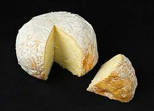

This is one of the most used ingridients in the whole world. This is a new method or, should i say an improvised pepper, grinded into tiny bits. It can be used in different varieties especially when used on steaks
 Click here to see more picture of grinded pepper
Click here to see more picture of grinded pepper
This is the second recipe, and althouth common, it's still the most used ingredient in the world, with its red color making it beautiful and neutralizing the amout of pepper in the matter arising. There are difernt use of tomatoes but, many prefer just cooking it though there are many ways to make it look enticing, some are:
This is one of the best recipes used i the world, and it's widespread use makes it very unique to its users!
You can read more on CHEESE here Read more on Cheese
 Click here to see more images on Cheese.